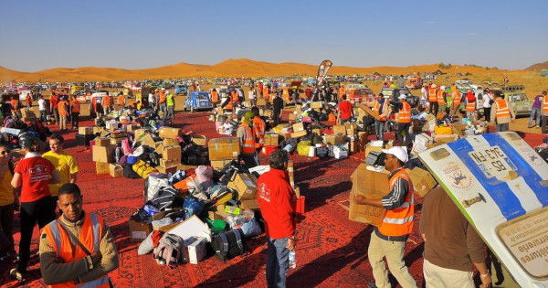

Le 4L Trophy
Présentation du rally
Le 4L Trophy est un raid automobile humanitaire reliant la France et le Maroc dans le but d'aider les plus démunis. Créé par Jean-Jacques Rey en 1997, il est organisé par l'entreprise Desertours en partenariat avec l'École supérieure de commerce de Rennes.
Le raid est organisé annuellement et fait participer près de 3000 étudiants de 18 à 28 ans. Les participants disputent une course d'orientation d'environ 6 000 km réalisée exclusivement en Renault 4L, traversant la France, l’Espagne et le Maroc. Le départ a lieu à Biarritz, puis les équipages traversent librement l'Espagne jusqu'à Algésiras et prennent le ferry pour le Maroc, où les épreuves du raid commencent. Le parcours présente plusieurs étapes dont certaines autour des dunes de Merzouga et dans l'Atlas, pour mener jusqu'à Marrakech. Les participants roulent la journée, en se guidant avec un roadbook et une boussole et se rassemblent le soir dans un bivouac prévu par l'organisation.
L'objectif est d'atteindre Marrakech pour remettre des fournitures scolaires et sportives ainsi que des denrées non périssables aux enfants les plus démunis du Maroc. Une fois sur place, celles-ci seront redistribuées par les équipes de l’association Enfants du Désert.
Une aventure humainitaire
Au delà de la compétition, cet événement est avant tout une aventure humaine, sportive et solidaire pour les étudiants. Depuis toujours, le Raid 4L Trophy intègre une démarche solidaire et éco-citoyenne qui font de ses actions une partie intégrante de l’aventure, notamment par la collaboration avec l’association Enfant du Désert pour laquelle les étudiants collectent des fournitures scolaires afin d’aider les enfants marocains dans leur scolarisation. Ce projet a déjà aidé plus de 260 000 enfants et a permis la création de 25 salles de classe et de 2 blocs sanitaire.
Cette action soutient aussi la Croix Rouge Française : Chaque équipage est en effet tenu d’acheminer 10 kg de denrées alimentaires (non périssables) jusqu’au Village Départ. En 2018, 14 tonnes de nourriture ont été collectées, soit plus de 20 000 repas servis.
Le 4L Trophy 2022
Le 4L Trophy 2022 est la 25ème édition du rally. Elle se déroulera sur 10 jours, du 17 au 27 février 2022.
Programme :
16 & 17 février : village départ à Biarritz et vérifications téchniques et administratives, départ vers Algésiras (Espagne)
Du 18 au 20 février : Accueil à Algésiras puis traversée du Détroit de Gibraltar
Du 21 au 25 février : 6 étapes dans le Grand Sud marocain
25 février : Arrivée à Marrakech
26 février : Journée de repos – Remise des Prix – Soirée de Clôture
27 février : Passage bateau et retour libre en Europe